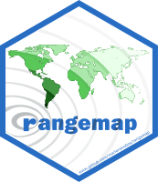
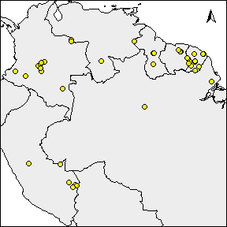
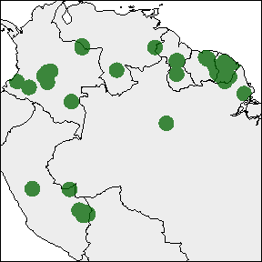
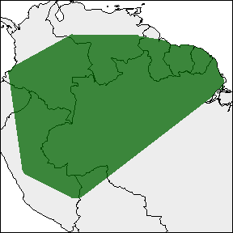
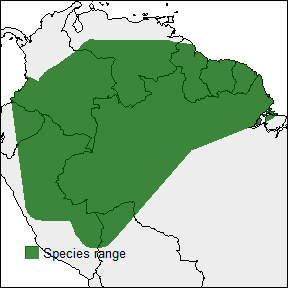
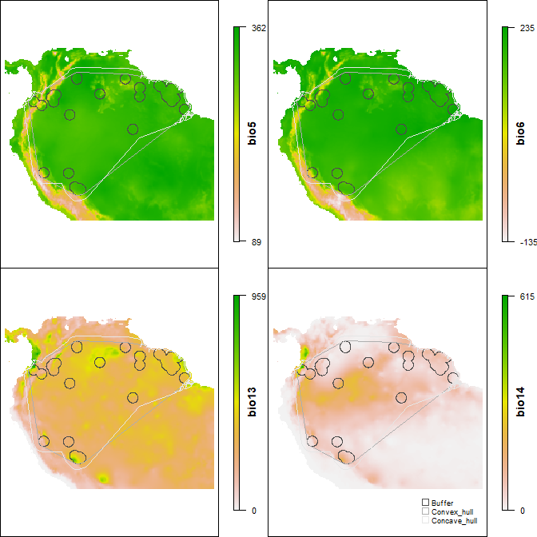
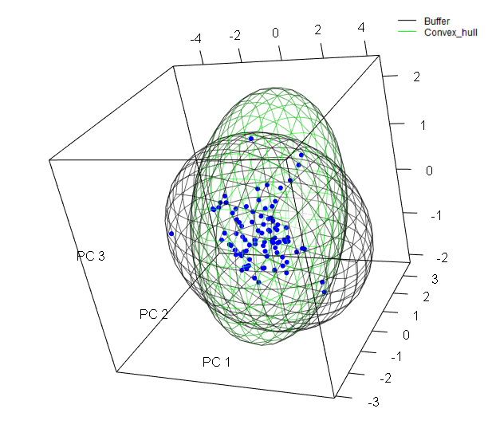
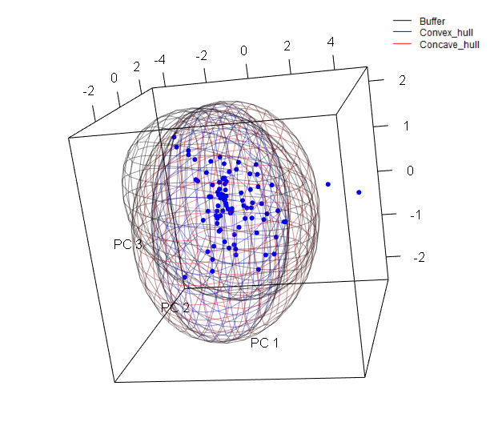

vignettes/rangemap_short_tutorial_IV.Rmd
rangemap_short_tutorial_IV.Rmd
If you haven’t seen the rangemap short tutorial I, short tutorial II, and short tutorial III, take a look at them for more background on the rangemap R package.
In this example we will explore three functions of this package that allow the users to create species range maps using the outputs of the functions rangemap_boundaries, rangemap_buffer, rangemap_enm, rangemap_hull, and rangemap_tsa.
Species range based on buffers
The function rangemap_buffer generates a distributional range for a given species by buffering provided occurrences using a defined distance. See the function’s help for more details.
# Getting the data
data("occ_d", package = "rangemap")
# Defining parameters
dist <- 100000 # buffer distance in meters
# Now we can create the species range based on buffers
buff_range <- rangemap_buffer(occurrences = occ_d, buffer_distance = dist)Species range based on convex hulls
With the rangemap_hull function we can generate a distributional range for a given species by buffering provided occurrences using a defined distance. See the function’s help for more details.
# Defining parameters
dist <- 100000
hull <- "convex"
# Now we can create the species range based on administrative areas
hull_range <- rangemap_hull(occurrences = occ_d, hull_type = hull,
buffer_distance = dist)Species range based on concave hulls
The function rangemap_hull generates a distributional range for a given species based on provided occurrences and two distinct type of hulls, convex and concave. See the function’s help for more details.
# Defining parameters
dist <- 200000
hull <- "concave"
# Now we can create the species range based on administrative areas
hull_range1 <- rangemap_hull(occurrences = occ_d, hull_type = hull,
buffer_distance = dist)Now the figure of our results
The other one with the potential extent of occurrence, the species occurrences and other map details. But let’s first define the characteristics we want in the figure.
par(mar = rep(0, 4)) # optional, reduces the margins of the figure
rangemap_plot(buff_range, add_occurrences = TRUE,
northarrow = TRUE, range_color = NA)
rangemap_plot(buff_range)
rangemap_plot(hull_range)
rangemap_plot(hull_range1, legend = TRUE, legend_position = "bottomleft")
The function ranges_emaps represents one or more ranges of the same species on various maps of environmental factors (e.g., climatic variables) to detect implications of using one or other type of range regarding the environmental conditions in the areas.
# Adding parameters
vars <- raster::stack(system.file("extdata", "variables.tif",
package = "rangemap"))
names(vars) <- c("bio5", "bio6", "bio13", "bio14")
# Plotting
par(mar = rep(0, 4))
ranges_emaps(buff_range, hull_range, hull_range1, variables = vars)
The function ranges_espace generates a three dimensional comparison of a species’ ranges created using distinct algorithms, to visualize implications of selecting one of them if environmental conditions are considered.
# For avoiding too much complexity we will use only two of the previous ranges
# comparison
ranges_espace(buff_range, hull_range, variables = vars, do_pca = TRUE,
add_occurrences = TRUE)
Now let’s create the same figure but with the three ranges and distinct colors.
ranges_espace(buff_range, hull_range, hull_range1, variables = vars, do_pca = TRUE,
range_colors = c("gray1", "blue", "red"), alpha = 0.4)